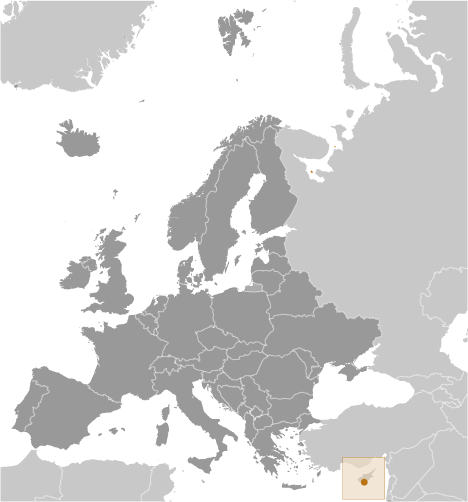
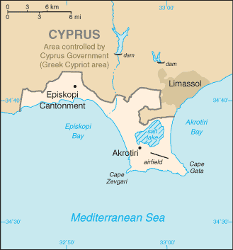
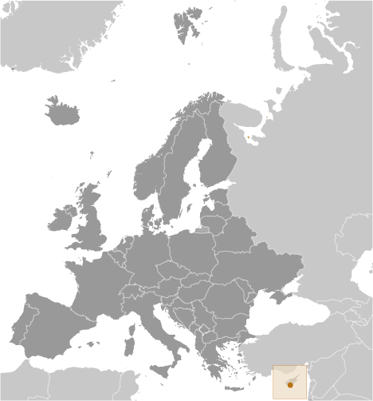
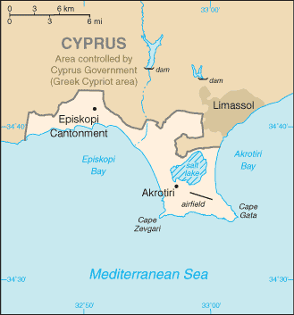

Europe ::
Akrotiri
-
Introduction :: Akrotiri
-
Background:By terms of the 1960 Treaty of Establishment that created the independent Republic of Cyprus, the UK retained full sovereignty and jurisdiction over two areas of almost 254 square kilometers - Akrotiri and Dhekelia. The southernmost and smallest of these is the Akrotiri Sovereign Base Area, which is also referred to as the Western Sovereign Base Area.
-
Geography :: Akrotiri
-
Location:Eastern Mediterranean, peninsula on the southwest coast of CyprusGeographic coordinates:34 37 N, 32 58 EMap references:Middle EastArea:total: 123 sq km
note: includes a salt lake and wetlands
country comparison to the world: 224Area - comparative:about 0.7 times the size of Washington, DCLand boundaries:total: 48 kmborder countries (1): Cyprus 48 kmCoastline:56.3 kmClimate:temperate; Mediterranean with hot, dry summers and cool wintersEnvironment - current issues:hunting around the salt lake; note - breeding place for loggerhead and green turtles; only remaining colony of griffon vultures is on the baseGeography - note:British extraterritorial rights also extended to several small off-post sites scattered across Cyprus; of the Sovereign Base Area (SBA) land, 60% is privately owned and farmed, 20% is owned by the Ministry of Defense, and 20% is SBA Crown land -
People and Society :: Akrotiri
-
Population:approximately 15,500 on the Sovereign Base Areas of Akrotiri and Dhekelia including 9,700 Cypriots and 5,800 Service and UK-based contract personnel and dependents (2011)Languages:English, GreekHIV/AIDS - adult prevalence rate:NA
-
Government :: Akrotiri
-
Country name:conventional long form: noneconventional short form: Akrotirietymology: named for the village that lies within the Western Sovereign Base Area on CyprusDependency status:a special form of UK overseas territory; administered by an administrator who is also the Commander, British Forces CyprusCapital:name: Episkopi Cantonment (base administrative center for Akrotiri and Dhekelia)geographic coordinates: 34 40 N, 32 51 Etime difference: UTC+2 (7 hours ahead of Washington, DC, during Standard Time)daylight saving time: +1hr, begins last Sunday in March; ends last Sunday in Octoberetymology: "Episkopi" means "episcopal" in Greek and stems from the fact that the site previously served as the bishop's seat of an Orthodox dioceseConstitution:presented 3 August 1960, effective 16 August 1960 (The Sovereign Base Areas of Akrotiri and Dhekelia Order in Council 1960 serves as a basic legal document); amended 1966 (2016)Legal system:laws applicable to the Cypriot population are, as far as possible, the same as the laws of the Republic of Cyprus; note - the Sovereign Base Area Administration has its own court system to deal with civil and criminal mattersJudicial branch:highest courts: Senior Judges' Court (consists of several visiting judges from England and Wales)judge selection and term of office: see entry for United Kingdomsubordinate courts: Resident Judges' Court; Courts MartialExecutive branch:chief of state: Queen ELIZABETH II (since 6 February 1952)head of government: Administrator Major General James ILLINGWORTH (since 14 March 2017); note - administrator reports to the British Ministry of Defense; the chief officer is responsible for the day-to-day running of the civil government of the Sovereign Baseselections/appointments: the monarchy is hereditary; administrator appointed by the monarch on the advice of the Ministry of DefenseDiplomatic representation in the US:none (overseas territory of the UK)Diplomatic representation from the US:none (overseas territory of the UK)Flag description:the flag of the UK is usedNational anthem:
note: as a UK area of special sovereignty, "God Save the Queen" is official (see United Kingdom)
-
Economy :: Akrotiri
-
Economy - overview:Economic activity is limited to providing services to the military and their families located in Akrotiri. All food and manufactured goods must be imported.Exchange rates:
note: uses the euro
-
Communications :: Akrotiri
-
Broadcast media:British Forces Broadcast Service (BFBS) provides multi-channel satellite TV service as well as BFBS radio broadcasts to the Akrotiri Sovereign Base Area (2009)
-
Transportation :: Akrotiri
-
Airports:1 (2017)country comparison to the world: 211Airports - with paved runways:2,438 to 3,047 m: 1 (2017)
-
Military and Security :: Akrotiri
-
Military - note:defense is the responsibility of the UK; Akrotiri has a full RAF base, headquarters for British Forces Cyprus, and Episkopi Support Unit